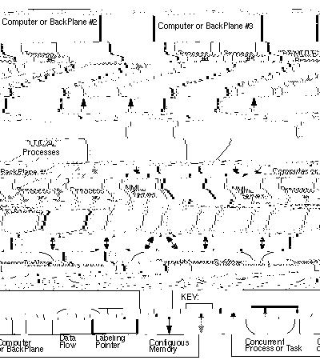
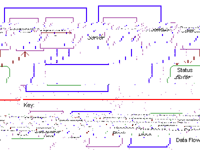

![On the left is a key. Light blue-green boxes are modules from the RCS library. White boxes are modules the user is expected to complete. Green rectancgle with rounded corners is a shared memory buffer. Arrows chow the communications channels. On the right : The white box Application Routines (user) over light blue-green box NML library Routines(rcslib) over white box User-defined Format function over white box user defined update functions over light blue-green box CMS update functions over light green box CMS Communications Functions over arrow to green outline labeled shared memory buffer.](appstrut.gif)
The Real-Time Control System (RCS) library is a C++ class library intended for multi-platform real-time distributed applications. It has been compiled and tested on several platforms including MS Windows, Mac OS X, Linux, and several UNIX systems. This document describes the use of the Neutral Message Language (NML) components of the library.
The Communication Management System (CMS) provides access to a fixed-size buffer of general data to multiple reader or writer processes on the same processor, across a backplane, or over a network. Regardless of the communication method required, the interface to CMS is uniform. Methods are provided to encode all of the basic C data types in a machine independent or neutral format, and to return them to the native format. A CMS_HEADER is added to each buffer which provides information about whether the buffer has been written or read from last, whether the buffer is new to a particular process and the size of the last write to the buffer. CMS uses a configuration file so that users can change communications protocols or parameters without recompiling or relinking the applications.
The Neutral Message Language (NML), formerly known as the Neutral Manufacturing Language, provides a higher level interface to CMS. It provides a mechanism for handling multiple types of messages in the same buffer as well as simplifying the interface for encoding and decoding buffers in neutral format and the configuration mechanism.
Most of the examples have corresponding text files which can be down-loaded and compiled. The examples are included both directly in this document for easy reading and as separate text-only files which are ready to be compiled. (WWW Users: You may have to use your browser's "Save" or "SaveAs" command to get the files.) Unfortunately, given the variety of systems and compilers that are available it is impossible for me to give detailed compiling instructions here. However the following form should work on most systems.(All typed on one line.)
[C++ Compiler] -I[Location of RCS Include Files] [Example C++ File(s)] [RCS Library for Platform] -o [Executable File]
Since a working knowledge of C++ will be very helpful for understanding or using the RCS library utilities you may want to review "A Quick C++ Introduction for RCS Library Users".
I like lots of examples.
Commands users are expected to enter at a command prompt will look like this.
Computer program generated example output will look like this.
Text files listed in line look like this.
All of the example files referred to are in rcslib_doc_examples.zip.
The figure below illustrates the structure of a typical RCS application using NML. The application is distributed across three computers. Processes 1, 2, and 3 are able to write directly into the shared memory buffers they use because they are located in the same computer or backplane. It is for this reason that they are labeled "LOCAL". Processes 4,5 and 6 can only access the buffers through an NML Server and are therefore labeled "REMOTE". The description might need to be complicated in a system with buffers in more than one machine. Processes would then need to be described as local or remote with respect to a particular buffer.

NML servers must be run for each buffer that will be accessed by remote processes. They read and write to the buffer in the same way as local processes on the behalf of remote processes.
NML uses configuration files to store information about which processes communicate with which buffers and how. Most of the options available to NML programmers are chosen by specifying them in the configuration file. (The configuration files are ascii text files with a format described under "Writing NML Configuration Files".)
NML is message-based rather than stream-based. Each successful read operation retrieves the data sent in exactly one write operation. Unless queuing is enabled, each write operation moves one message into the buffer replacing any previous message.
More than one type of message can be sent to the same buffer so a unique type identifier is always contained in the message. After a read operation, the process must use this identifier to determine the type of message before using any of the data in the message. Each type of message implies a particular data structure. Most messages are user-defined.
Messages are called encoded if they have been translated into a machine-independent or neutral format such as the eXternal Data Representation (XDR). Buffers are called encoded if the messages in them are to be encoded which is established in the configuration file. NML servers can encode and decode messages on behalf of remote processes. An NML vocabulary defines the set of messages that may be used in an application and provides the necessary functions for encoding and decoding the messages.
Header File
All of the necessary header files will be included if rcs.hh is included.
Classes
The following classes provide the programming interface for CMS and NML:
NML
NMLmsg
NML_SERVER
CMS
CMS_HEADER
CMS_SERVER
CMS_USER
These classes are detailed in the following sections.
NML Application Structure
The next figure shows the structure of a single concurrent process module using NML (the memory buffer appears to be local to the application)
The applications routines initialize and use objects from class NML and NMLmsg which depend on some user-defined functions. The format function selects from a set of user defined update functions for each aggregate type the user will need to pass to the memory buffer. The update function for each aggregate type is built by updating each member inpidually using CMS routines for the basic C data types. These basic update routines write to and read from internal CMS buffers which are themselves read or written to memory buffers that are available to other concurrent processes using the CMS Communications Routines.
Because NML is configurable, programmers can choose between protocols with higher performance but which may be more restrictive or require more expensive hardware or those that are less restrictive or require less expensive more widely available hardware. By making a buffer local to a process you can improve the performance of that process. By moving processes you may be able to reduce the load on one CPU or increase the number of processes able to use the faster local protocol. Using servers to provide remote access to buffers frees local processes from being slowed down by the communications with remote processes.
A controller for a robot must poll a variety of inputs and perform some computations every "n" milliseconds and a remote supervisor should be able to check the status of the robot when needed.
The next figure shows one possible design for this application. Because the controller can write directly to the shared memory buffer, writing the status takes a minimum time for the controller. Using the NML server allows the supervisor to be located almost anywhere and on almost any host.

NML applications programmers need to create a message vocabulary and associated format function, write a configuration file, create an NML object, and use the read and write member functions.
The message vocabulary is a set of C++ classes, derived from NMLmsg, which can be thought of as data structures that are copied into the NML buffer during a write operation, and copied out during a read operation. Each class is associated with a unique identifier, a positive integer, that allows readers to identify which message is present in the buffer. Besides the particular data members of the class, each class also needs an update function which calls CMS methods to convert the data members to types CMS can handle. Currently, CMS provides support for the basic C language built-in types. "long long" and "unsigned long long" types are not really standard built in types and are not supported. One should read NML 64bit long notes before assuming a long or unsigned long will store 64 bits insead of 32 bits, or before assuming a long double stores more than 64 bits. (See "Trouble Shooting - Insufficient Arguments Error")
To enable CMS to neutrally format the data in the buffer or to allow NML servers to encode and decode the data for remote processes, a format function is required. This format function is nothing more than a switch statement, associating NML identifiers with the update functions of particular NML message classes. The format function can be manually programmed as but it is recommended to have it be automatically generated using the NML Code Generator.
Some advanced users define messages with variable length arrays. There are several ways to do this, but the simplest and most convenient way is ussually to use the DECLARE_NML_DYNAMIC_LENGTH_ARRAY macro. The macro has special meaning to the NML Code Generator. The result is an array with a constant maximum size but where only the first name_length elements are sent across the network with each remote read or write. Local reads and writes can be forced to use the condensed version by setting the neutral configuration file flag to 1.
For your information the text of the macro is:
#define DECLARE_NML_DYNAMIC_LENGTH_ARRAY(type, name, size) int name##_length; type name[size];
Files needed for this example include: nml_ex1.hh, nml_ex1.cc
/* nml_ex1.hh */
#ifndef NML_EX1_HH
#define NML_EX1_HH
#include "rcs.hh"
/* Give the new structure a unique id number */
#define EXAMPLE_MSG_TYPE 101
/* The id number must be unique within a CMS
buffer, i.e. the number must be different than the id of any other
type that might be written to a particular buffer. For simplicity it
is recommended that the id number also be unique within an
application. */
/* Define the new message structure */
struct EXAMPLE_MSG: public NMLmsg {
/* The constructor needs to store the id number */
/* and the size of the new structure */
/* by passing them as arguments to the base class constructor. */
EXAMPLE_MSG():NMLmsg(EXAMPLE_MSG_TYPE, sizeof(EXAMPLE_MSG)){};
/* Each new type needs to overload the update function. */
void update(CMS *cms);
/* Data in this new message format. */
float f;
char c;
int i;
DECLARE_NML_DYNAMIC_LENGTH_ARRAY(int, da, 100);
};
/* Declare the NML Format function. */
int ex_format(NMLTYPE type, void *buf, CMS *cms);
#endif /* End of NML_EMC_HH */
NML has several constructors, but most users will use the following.
NML(NML_FORMAT_PTR f_ptr, char * buf, char *proc, char *file);
The parameters are:
f_ptr = <address of format
function to use>;
buf = <name of the buffer to
connect to as specified in configuration file>;
proc
= <name under which to access the buffer>;
file =
<name of the configuration file>;
There is also a constructor that takes a buffer line and process line as arguments rather than expecting to retrieve them from a configuration file. It is important for the application to ensure that the arguments contain consistant parameters given the options passed by other applications with which it will communicate.
NML(const char *bufferline, const char *processline);
If the second constructor is used the format function needs to be set before any read or write, or even before one checks for a valid connection. The function to use for this is:
int NML::prefix_format_chain (NML_FORMAT_PTR);
This function can also be used multiple times regardless of which constructor is called. Then each time the format function would need to be called each format function in the list will be called until one returns a non-zero value. This might be useful for a channel that will collect messages from multiple types of applications each with its own format function or distrubute messages to multiple types of applications each with its own format function. One needs to be careful to ensure that message types do not conflict. Another option would be to have the java code generator load multiple header files and then generate a single format function combining all the message updates.
If you examine many of the communications interfaces you'll find a function that looks like the UNIX read function.
/* UNIX general purpose read. */
int read(int fd, char *buf, int nbyte);
/* UNIX Read from message queue. */
int msgrcv(int msqid, struct msgbuf *, int msgsz, long msgtyp, int msgflg);
/* Read from a socket (often used for TCP/IP) */
int recv(int socket, char *buf, int len, int flags);
Notice that the first parameter is an identifier of the source to read, the second parameter is some type of pointer to a buffer, and the third parameter is a measure of the size of the buffer. Unfortunately this is a rather poor model for configurable message-based communication because the program receiving a message must be able to create a buffer large enough to hold the incoming message even though there is no way it can know the size of the new message. NML solves this problem by providing users access to a local buffer that was created based on the size specified in the configuration file and will contain a copy of the incoming message after a read operation.
These are the member functions used to perform read:
NMLTYPE NML::read();
If the read is successful the message currently in the global CMS buffer will be copied into a local buffer for this process. The address of this local buffer is available through the member function get_address. If the buffer is encoded the format function will be called to return the message to native format. The message should be some user defined type derived from NMLmsg.The member NML::error_type can be examined to see the cause of NML::read returning -1. (See "Handling Errors" ) If queuing is enabled on this buffer this read will remove the message from the queue so that other processes that are reading from this buffer will see the next message on the queue and potentially miss this one.
Returns:
0 if the
buffer has not been written to since the last read or
-1 if an error
occurred; or
the type id of the message received if the buffer
contains new data.
NMLmsg *NML::get_address();
This function returns a pointer to the NML data stored during an NML::read() operation.
Files needed for this example include: nml_ex3.cc, nml_ex1.hh, nml_ex1.cc, ex_cfg.nml
/* nml_ex3.cc */ #include "rcs.hh" #include "nml_ex1.hh" int main(int argc, const char **argv) { RCS_TIMER timer(0.1); NML example_nml(ex_format, "ex_buf1","ex3_proc", "ex_cfg.nml"); EXAMPLE_MSG *example_msg_ptr; int quit = 0; while(!quit) { switch(example_nml.read()) { case -1: rcs_print( "A communications error occurred.\n"); quit = 1; break; case 0: /* The buffer contains the same message */ /* you read last time. */ break; case EXAMPLE_MSG_TYPE: example_msg_ptr = (EXAMPLE_MSG *)example_nml.get_address(); rcs_print(" We have a new example message. \n"); rcs_print(" The value of its members are:\n "); rcs_print(" f=%f, c=%c, i=%d\n ", example_msg_ptr->f, example_msg_ptr->c, example_msg_ptr->i); quit = 1; break; } timer.wait(); } }
Compile with:*
## Set RCS lib install directory.
## likely needs to adjusted for your system.
RCSLIB_DIR=~/rcslib/;
## Set the path for finding librcs.so
LD_LIBRARY_PATH="${RCSLIB_DIR}/lib/:${LD_LIBRARY_PATH}";
export LD_LIBRARY_PATH;
## Create nml_ex1.cc from nml_ex1.hh
java -jar "${RCSLIB_DIR}"/bin/CodeGenCmdLine.jar nml_ex1.hh -o nml_ex1.cc
g++ nml_ex3.cc nml_ex1.cc -I"${RCSLIB_DIR}"/include -L "${RCSLIB_DIR}"/lib -lrcs -o nml_ex3
This example also uses the RCS_TIMER class and the rcs_print function described in the guide for the RCS Library Lower Level Utilities. The symbolic constant VXWORKS should be defined only if you wish to compile the example for VxWorks. If you try to run this example, it will wait for something to be written into the buffer. To write something into the buffer, you can use the example in Writing NML Data
NMLTYPE NML::blocking_read(double timeout);
This performs the same function as the read() above except that if there is no new data the calling process will be put to sleep until either another process writes to the buffer or the timeout occurs. The timeout is given in seconds. to wait indefinitely provide a negative timeout. It is necessary to add "bsem=<key>" to the buffer line of the NML configuration file in order to be able to perform a blocking read.
Returns:
-1 if an error
occurred; or
the type id of the message received if/when the buffer
contains new data.
NMLTYPE NML::peek();
/* Read an NML message from a CMS buffer without changing the was_read flag */
Peek works exactly the same as read except that the flag that lets others know when the buffer is read is not changed and if queuing is enabled the message is not removed from the queue. This could be useful if you need to monitor a buffer without letting other processes using the buffer know. The member NML::error_type can be examined to see the cause of NML::peek returning -1.(See "Handling Errors")
Returns:
0 if the buffer has not been
written to since the last read;
-1 if an error occurred; or
the
type id of the message received if the buffer contains new data.
If you examine many of the communications interfaces you'll find a function that looks like the UNIX write function.
/* UNIX general purpose write. */
int write(int fd, char *buf, int nbyte);
/* UNIX Send to a message queue. */
int msgsnd(int msqid, struct msgbuf *, int msgsz, long msgtyp, int msgflg);
/* Output to a socket (often used for TCP/IP) */
int send(int socket, char *msg, int len, int flags);
Notice that the first parameter is an identifier of the destination to write, the second parameter is some type of pointer to a buffer, and the third parameter is a measure of the size of the buffer. However C++ allows us to considerably simplify this interface, by storing the size of a message when its constructed and by overloading the write function to accept either references or pointers to messages. All of the NML write functions are non-blocking.
These are the member functions used to perform writes:
/* Write an NML message into a CMS buffer */
int NML::write(NMLmsg &nml_msg); /* Reference version. */
int NML::write(NMLmsg *nml_msg); /* Pointer version. */
nml_msg should be a pointer or reference to an object of some user defined type derived from NMLmsg. If the buffer is configured to be in a neutral format the message will be encoded before it is written to the CMS buffer. The write functions overwrite the message currently in the buffer if queuing is not enabled. The member NML::error_type can be examined to see the cause of NML write returning -1.(See "Handling Errors" )
Returns:
0 if successful;
-1 otherwise.
Files needed for this example include: nml_ex4.cc, nml_ex1.hh, nml_ex1.cc, ex_cfg.nml
/* nml_ex4.cc */ #include "rcs.hh" #include "nml_ex1.hh" int main() { NML example_nml(ex_format, "ex_buf1", "ex4_proc", "ex_cfg.nml"); EXAMPLE_MSG example_msg; example_msg.f = 123.456; example_msg.c = 'c'; example_msg.i = 99; example_nml.write(example_msg); }
Compile with:*
## Set RCS lib install directory.
## likely needs to adjusted for your system.
RCSLIB_DIR=~/rcslib/;
## Set the path for finding librcs.so
LD_LIBRARY_PATH="${RCSLIB_DIR}/lib/:${LD_LIBRARY_PATH}";
export LD_LIBRARY_PATH;
## Create nml_ex1.cc from nml_ex1.hh
java -jar "${RCSLIB_DIR}"/bin/CodeGenCmdLine.jar nml_ex1.hh -o nml_ex1.cc
g++ nml_ex4.cc nml_ex1.cc -I"${RCSLIB_DIR}"/include -L "${RCSLIB_DIR}"/lib -lrcs -o nml_ex4
This example writes a message into a buffer. To read the message use the example in Reading NML Data
/* Write an NML message into a CMS buffer if it has been read. */
int NML::write_if_read(NMLmsg &nml_msg); /* Reference version. */
int NML::write_if_read(NMLmsg *nml_msg); /* Pointer version. */
These functions combine the operations of writing and checking if a buffer has been read. It checks to see if the buffer has been read. If it has then it writes the message into the buffer just as write would, but if not it returns -1. Since there is only one access to the buffer, there is no way for another process to write into the buffer between the check and the write. The member NML::error_type can be examined to see the cause of NML write_if_read returning -1. (See "Handling Errors")
Returns:
0 if successful;
-1 otherwise.
This may not work as expected with remote processes unless "CONFIRM_WRITE" is added the the corresponding BufferLine in the NML file. From "The NML Configuration Files" documentation:
To force the server to send confirmation messages back to a remote writer add "confirm_write". This allows a remote writer to detect problems such as a full queue or if a write_if_read failed because the buffer was not read but it reduces performance.
If queuing is not enabled then a flag is kept in every CMS buffer called was_read. Every time a write is performed on the buffer the flag is set to 0. Every time a read is performed on the buffer the flag is set to 1. The check_if_read function just returns the value of that flag. To avoid overwriting a buffer that has not been read yet, it is better to use the write_if_read function. The member NML::error_type can be examined to see the cause of NML::check_if_read returning -1. (See"Handling Errors" )
If queuing is enabled then the check_if_read function returns 1 only if all of the messages in the buffer have been read meaning that the queue is empty.
Here is the prototype:
int NML::check_if_read();
Returns:
0 The buffer contains a message that has never been read.
1 The buffer contains a message that has been read at least once.
-1 An error occurred that prevented NML from determining
whether the buffer has been read.
The number of messages that have been successfully written to the buffer over its lifetime is saved in the buffer and can be retreived for diagnostic or monitoring purposes.
Here is the prototype:
int NML::get_msg_count();
Returns:
-1 Some error prevented the message count from being retrieved .
otherwise the number of messages written to that buffer over its lifetime.
If queing is enabled the number of messages queued in the buffer, can be obtained.
Here is the prototype:
int NML::get_queue_length();
Returns:
-1 Some error prevented the queue length from being retrieved .
otherwise the number of messages currently queued in the buffer.
The mechanism for queuing in NML stores the queue in a fixed length buffer. It could perhaps store many small messages or only a few larger ones, or some combination. The number of bytes free in the buffer can be used to estimate how many more messages can be written to the buffer before it is full.
Here is the prototype:
int NML::get_space_available();
Returns:
-1 Some error prevented the space available from being retrieved .
otherwise the number of bytes that are free in a queued buffer is returned.
You may want to clear a buffer to preempt previously sent messages still in the queue or to ensure that residual data in a buffer is not mistaken for NML messages.
int NML::clear();
Returns:
0 The buffer was successfully cleared.
-1 An error occurred.
In order to start up a process faster, it is possible to load the configuration file in to memory before creating several NML channels that use the same file. The file can later be unloaded to free the previously allocated memory.
. . . load_nml_config_file( "ex_cfg.nml" ); NML example_nml1(ex_format, "ex_buf1","ex4_proc", "ex_cfg.nml"); NML example_nml2(ex_format, "ex_buf2","ex4_proc", "ex_cfg.nml"); NML example_nml3(ex_format, "ex_buf3","ex4_proc", "ex_cfg.nml"); NML example_nml4(ex_format, "ex_buf4","ex4_proc", "ex_cfg.nml"); . . . unload_nml_config_file( "ex_cfg.nml" ); . . .
It is occasionally helpful to be able to display the contents of any NMLmsg in a string. To accomplish this you will need an NML object which was initialized with a format function that handles your message type.
const char * NML::msg2str(NMLmsg *);
const char * NML::msg2str(NMLmsg &);
Returns:
This function returns a pointer to a string with each member of the NML message converted to a string and separated with commas if successful or NULL otherwise. The first two members will be the type and size of the message. The string may be cleared on the next call to read, write, check_if_read, peek, write_if_read, clear, or msg2str with that NML object, or when that NML object is deleted, so the string should be displayed or copied before any of these operations occur.
Occasionally, it may be helpful to override some of the options in the configuration file. For example a program will only connect to one host each time it is run, but each time it might be a different host, instead of changing the config file each time, it might be convenient to let the host be specified on the command line. The following functions set static global variables common to all tasks in multithreaded environments like VxWorks, but unique to each process in more traditional environments like sunos5
extern void nmlSetHostAlias(const char *hostName, const char *hostAlias); extern void nmlClearHostAliases(); extern void nmlAllowNormalConnection(); extern void nmlForceRemoteConnection(); extern void nmlForceLocalConnection();
nmlSetHostAlias adds another host/alias pair to a linked list. Whenever a hostname is read from the configuration file this list is checked to see if it matches one of the aliases, and if so it is effectively replaced with the corresponding host name. nmlClearHostAliases deletes the entire list. nmlForceRemoteConnection forces the ProcessType to be read as REMOTE for all following connections. nmlForceLocalConnection forces the ProcessType to be read as LOCAL for all following connection. nmlAllowNormalConnection returns it to the default behavior where the value in the configuration file is honored.
Here's an example using it to allow the user to select a host from the command line. NOTE: The example only works when localhost is specified in the config file and the process type for "bReader" is REMOTE.
#include "rcs.hh" #include "nml_ex1.hh" int main(int argc, char **argv) { if(argc > 1) { nmlSetHostAlias(argv[1],"localhost"); } NML example_nml(ex_format, "ex_buf1", "bReader", "ex_cfg.nml"); if(!example_nml.valid()) { rcs_print_error("Bad.\n"); } else { rcs_print("Good.\n"); } }
Compile with:*
## Set RCS lib install directory.
## likely needs to adjusted for your system.
RCSLIB_DIR=~/rcslib/;
## Set the path for finding librcs.so
LD_LIBRARY_PATH="${RCSLIB_DIR}/lib/:${LD_LIBRARY_PATH}";
export LD_LIBRARY_PATH;
## Create nml_ex1.cc from nml_ex1.hh
java -jar "${RCSLIB_DIR}"/bin/CodeGenCmdLine.jar nml_ex1.hh -o nml_ex1.cc
g++ nml_set_host_alias_ex.cc nml_ex1.cc -I"${RCSLIB_DIR}"/include -L "${RCSLIB_DIR}"/lib -lrcs -o nml_set_host_alias_ex
Use of PHANTOM Buffers has been deprecated.
When the NML member functions cannot perform their task they try to provide developers with some information that may allow them to resolve the problem. This information is available in several forms.
The functions NML::read(), NML::write(), NML::peek(), and NML::write_if_read() return -1 if an error occurred. NML::get_address() returns NULL if an error occurs.
Messages are printed to character display devices or stored in a linked list with the rcs_print_error facility. (See the document "RCS Lower Level Utilities" for more information on the rcs_print_error facility. ) Often several messages are issued for the same error, because if an error occurs at a low level the low level function will print an error and return a value indicating an error to a higher level function which may then also print an error. This allows the user to see the detail available at the lower level and the context available at the higher level.
NML::error_type is a variable set by NML functions that fail. It may have one the following values:
int NML::valid();
NML::valid() returns 0 if the object was not properly constructed or if an error has occurred severe enough that it is unlikely that any of the other NML operations on this object will succeed or 1 if everything seems to be in order.
Files needed for this example include: nml_ex6.cc, nml_ex1.hh, nml_ex1.cc, ex_cfg.nml
/* nml_ex6.cc */
#include "rcs.hh"
#include "nml_ex1.hh"
#include <stdio.h>
/* This example prompts the user when NML times out to see if it
should try again. */
main() {
NML example_nml(ex_format, "ex_buf1","ex6_proc", "ex_cfg.nml");
EXAMPLE_MSG *example_msg_ptr;
char input_array[10];
TRY_AGAIN:
switch(example_nml.read())
{
case -1:
if(example_nml.error_type == NML_TIMED_OUT)
{
rcs_print("NML timed out\n");
rcs_print("Do you want to try again? (y/n)");
fgets(input_array,sizeof(input_array),stdin);
if(input_array[0] == 'y')
goto TRY_AGAIN;
}
break;
case 0:
/* The buffer contains the same message you read last time. */
break;
case EXAMPLE_MSG_TYPE:
example_msg_ptr = (EXAMPLE_MSG *)example_nml.get_address();
/* We have a new example message. */
break;
}
}
NML servers allow remote processes to access local buffers. The code for the servers has already been included in the RCS library but you must still start and stop them. There are several ways for you to control when servers are spawned and killed.
void run_nml_servers();
Each time an NML object is created it is added to a global list. In operating systems like LynxOs and SunOs that use heavy-weight threads each process has its own list. In operating systems like VxWorks that use light-weight threads the list is shared by all processes currently running that use NML. The function run_nml_servers reads the lists, checks for the server configuration flag, and groups the buffers with the same RPC, TCP or UDP number. For each different RPC, TCP or UDP program number a server is spawned to handle requests for the group of buffers with that RPC, TCP or UDP number. If all of the RPC, TCP or UDP numbers were the same the current process would become the server for all the buffers on the list that have a non-zero server configuration flag. This function will not return. Using run_nml_servers() has several advantages over nml_start(), nml_cleanup() described later and is generally the preferred method.
Files needed for this example include: nml_ex9.cc, nml_ex1.hh, nml_ex1.cc, ex_cfg.nml
#include "rcs.hh"
#include "nml_ex1.hh"
int main(int argc,const char**argv)
{
NML nml1(ex_format, "ex_buf1","ex9_svr","ex_cfg.nml");
NML nml2(ex_format, "ex_buf2","ex9_svr","ex_cfg.nml");
run_nml_servers(); /* This never returns. */
}
Compile with:*
## Set RCS lib install directory.
## likely needs to adjusted for your system.
RCSLIB_DIR=~/rcslib/;
## Set the path for finding librcs.so
LD_LIBRARY_PATH="${RCSLIB_DIR}/lib/:${LD_LIBRARY_PATH}";
export LD_LIBRARY_PATH;
## Create nml_ex1.cc from nml_ex1.hh
java -jar "${RCSLIB_DIR}"/bin/CodeGenCmdLine.jar nml_ex1.hh -o nml_ex1.cc
g++ nml_ex9.cc nml_ex1.cc -I"${RCSLIB_DIR}"/include -L "${RCSLIB_DIR}"/lib -lrcs -o nml_ex9
void nml_start();
void nml_cleanup()
The nml_start function works like run_nml_servers except that it may spawn an additional process(es) so that it will return. The nml_cleanup function deletes all NML_SERVER objects and all NML objects so that all servers that were spawned will be stopped with SIGINT.
Files needed for this example include: nml_ex10.cc, nml_ex1.hh, nml_ex1.cc, ex_cfg.nml
/* nml_ex10.cc */
#include "rcs.hh"
#include "nml_ex1.hh"
main()
{
NML nml1(ex_format, "ex_buf1","ex10_svr","ex_cfg.nml");
NML nml2(ex_format, "ex_buf2","ex10_svr","ex_cfg.nml");
/* Spawn 2 servers and continue. */
nml_start();
/* . . . */
/* Perform some processing. */
/* . . . */
/* Kill the 2 servers and close NML channels. */
nml_cleanup();
}
Warning: Do NOT use any nml objects after calling nml_cleanup.
There are several utilities that can be used directly by users without any additional programming.
nmltest [config_file local_host]
The nmltest program reads the config_file and attempts to connect to every buffer in the file. If it succeeds the buffer exists. If it does not either the master for the buffer was not started, or the server was not started, or the config file contains an error. It attempts to use the local protocol for buffers on the local_host. If you do not specify the config_file or local host it will prompt you for them. It also reports the type and size of message if any in the buffer and some other information which may be useful.
nmlperf [config_file local_host master iterations increments detailed_output display_mode]
perfsvr [config_file local_host]
The performance of NML varies depending on the system you are running under and the type of protocol used by CMS. The nmlperf program connects to every buffer in config_file. It uses the local protocol if the buffer is on local_host. It initializes the buffer if master equals 1. It writes and reads the buffer with messages from a minimum size to the size of the buffer for iterations times with increments different sizes. If detailed_output equals 1 then it will display the time for every read and write. display_mode can be "B" for bytes-per-second or "M" for messages-per-second.
If you don't specify all the parameters then you will be prompted for them. The perfsvr program is run on a remote machine to allow testing of remote protocols.
nmlclean [config_file local_host]
Occasionally severe errors cause programs to exit without deleting the NML buffers that they create. The nmlclean program attempts to free all of the operating system resources associated with buffers in the config_file on local_host and to kill the NML servers that are running.
The NML Script files previously described here have been deprecated.
Here is a list of some of the problems that NML users have encountered and some tips for resolving them.
While compiling one of the update functions for the NML vocabulary, the compiler complains that there are insufficient arguments for one of the CMS::update functions.
When I am trying to initialize an NML channel, I get the following error:
shmget failed: No such file or directory.
Solution: The master was probably not started before this non-master. Start the master first.
When I am trying to initialize an NML channel, I get the following error.
shmget failed: Invalid argument.
Solution: This usually happens when the shared memory buffer exists but it's not the size that this process expects. Check that all of the processes are using the same configuration file and that the configuration file hasn't changed since the master process started. Also check the shared memory buffer with "ipcs" command to make sure no one else has created the buffer with a different size.
When I am trying to initialize an NML channel to a remote host, my program gets hung.
Solution: Check that the host specified for the buffer in the configuration file is correct, up and running and that the programs host can ping the remote host. If the host is not up and running or you can't ping it call your system administrator.
Last Modified: June 17, 2009
*Commands are generally appropriate for Linux/Unix/MacOS by just pasting them into a terminal. For Windows install Cygwin and Java Develeper's Kit, set the PATH to add the JDK dir and paste the commands into cygwin.
If you have questions or comments regarding this page please contact Will Shackleford at shackle@cme.nist.gov
To be automatically sent information on updates to the RCS library, please subscribe to the "nist_rcs" mailing list on http://www.onelist.com.